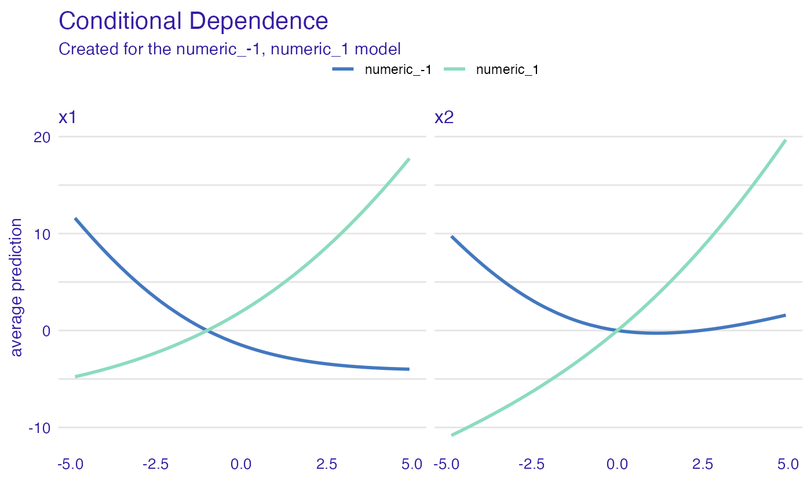

Simulated data, real problem
Przemyslaw Biecek
2023-01-08
Source:vignettes/vignette_simulated.Rmd
vignette_simulated.RmdSimulated data
Let’s consider a following problem, the model is defined as
\[ y = x_1 * x_2 + x_2 \]
But \(x_1\) and \(x_2\) are correlated. How XAI methods work for such model?
# predict function for the model
the_model_predict <- function(m, x) {
x$x1 * x$x2 + x$x2
}
# correlated variables
N <- 50
set.seed(1)
x1 <- runif(N, -5, 5)
x2 <- x1 + runif(N)/100
df <- data.frame(x1, x2)Explainer for the models
In fact this model is defined by the predict function
the_model_predict. So it does not matter what is in the
first argument of the explain function.
#> Preparation of a new explainer is initiated
#> -> model label : numeric ( default )
#> -> data : 50 rows 2 cols
#> -> target variable : not specified! ( WARNING )
#> -> predict function : the_model_predict
#> -> predicted values : No value for predict function target column. ( default )
#> -> model_info : package Model of class: numeric package unrecognized , ver. Unknown , task regression ( default )
#> -> model_info : Model info detected regression task but 'y' is a NULL . ( WARNING )
#> -> model_info : By deafult regressions tasks supports only numercical 'y' parameter.
#> -> model_info : Consider changing to numerical vector.
#> -> model_info : Otherwise I will not be able to calculate residuals or loss function.
#> -> predicted values : numerical, min = -0.1726853 , mean = 7.70239 , max = 29.16158
#> -> residual function : difference between y and yhat ( default )
#> A new explainer has been created!Ceteris paribus
Use the ceteris_paribus() function to see Ceteris
Paribus profiles. Clearly it’s not an additive model, as the effect of
\(x_1\) depends on \(x_2\).
library("ingredients")
library("ggplot2")
sample_rows <- data.frame(x1 = -5:5,
x2 = -5:5)
cp_model <- ceteris_paribus(explain_the_model, sample_rows)
plot(cp_model) +
show_observations(cp_model) +
ggtitle("Ceteris Paribus profiles")
Dependence profiles
Lets try Partial Dependence profiles, Conditional Dependence profiles and Accumulated Local profiles. For the last two we can try different smoothing factors
pd_model <- partial_dependence(explain_the_model, variables = c("x1", "x2"))
pd_model$`_label_` = "PDP"
cd_model <- conditional_dependence(explain_the_model, variables = c("x1", "x2"))
cd_model$`_label_` = "CDP 0.25"
ad_model <- accumulated_dependence(explain_the_model, variables = c("x1", "x2"))
ad_model$`_label_` = "ALE 0.25"
plot(ad_model, cd_model, pd_model) +
ggtitle("Feature effects - PDP, CDP, ALE")
cd_model_1 <- conditional_dependence(explain_the_model, variables = c("x1", "x2"), span = 0.1)
cd_model_1$`_label_` = "CDP 0.1"
cd_model_5 <- conditional_dependence(explain_the_model, variables = c("x1", "x2"), span = 0.5)
cd_model_5$`_label_` = "CDP 0.5"
ad_model_1 <- accumulated_dependence(explain_the_model, variables = c("x1", "x2"), span = 0.5)
ad_model_1$`_label_` = "ALE 0.1"
ad_model_5 <- accumulated_dependence(explain_the_model, variables = c("x1", "x2"), span = 0.5)
ad_model_5$`_label_` = "ALE 0.5"
plot(ad_model, cd_model, pd_model, cd_model_1, cd_model_5, ad_model_1, ad_model_5) +
ggtitle("Feature effects - PDP, CDP, ALE")Dependence profiles in groups
And now, let’s see how the grouping factor works
# add grouping variable
df$x3 <- factor(sign(df$x2))
# update the data argument
explain_the_model$data = df
# PDP in groups
pd_model_groups <- partial_dependence(explain_the_model,
variables = c("x1", "x2"),
groups = "x3")
plot(pd_model_groups) +
ggtitle("Partial Dependence")
# ALE in groups
ad_model_groups <- accumulated_dependence(explain_the_model,
variables = c("x1", "x2"),
groups = "x3")
plot(ad_model_groups) +
ggtitle("Accumulated Local")
# CDP in groups
cd_model_groups <- conditional_dependence(explain_the_model,
variables = c("x1", "x2"),
groups = "x3")
plot(cd_model_groups) +
ggtitle("Conditional Dependence")
Session info
#> R version 4.2.2 (2022-10-31)
#> Platform: x86_64-apple-darwin17.0 (64-bit)
#> Running under: macOS Big Sur ... 10.16
#>
#> Matrix products: default
#> BLAS: /Library/Frameworks/R.framework/Versions/4.2/Resources/lib/libRblas.0.dylib
#> LAPACK: /Library/Frameworks/R.framework/Versions/4.2/Resources/lib/libRlapack.dylib
#>
#> locale:
#> [1] en_US.UTF-8/en_US.UTF-8/en_US.UTF-8/C/en_US.UTF-8/en_US.UTF-8
#>
#> attached base packages:
#> [1] stats graphics grDevices utils datasets methods base
#>
#> other attached packages:
#> [1] ggplot2_3.4.0 ingredients_2.2.1 DALEX_2.4.2
#>
#> loaded via a namespace (and not attached):
#> [1] highr_0.10 bslib_0.4.2 compiler_4.2.2 pillar_1.8.1
#> [5] jquerylib_0.1.4 tools_4.2.2 digest_0.6.31 jsonlite_1.8.4
#> [9] evaluate_0.19 memoise_2.0.1 lifecycle_1.0.3 tibble_3.1.8
#> [13] gtable_0.3.1 pkgconfig_2.0.3 rlang_1.0.6 cli_3.5.0
#> [17] yaml_2.3.6 pkgdown_2.0.7 xfun_0.36 fastmap_1.1.0
#> [21] withr_2.5.0 stringr_1.5.0 knitr_1.41 desc_1.4.2
#> [25] fs_1.5.2 vctrs_0.5.1 sass_0.4.4 systemfonts_1.0.4
#> [29] rprojroot_2.0.3 grid_4.2.2 glue_1.6.2 R6_2.5.1
#> [33] textshaping_0.3.6 fansi_1.0.3 rmarkdown_2.19 farver_2.1.1
#> [37] purrr_1.0.0 magrittr_2.0.3 scales_1.2.1 htmltools_0.5.4
#> [41] colorspace_2.0-3 labeling_0.4.2 ragg_1.2.4 utf8_1.2.2
#> [45] stringi_1.7.8 munsell_0.5.0 cachem_1.0.6